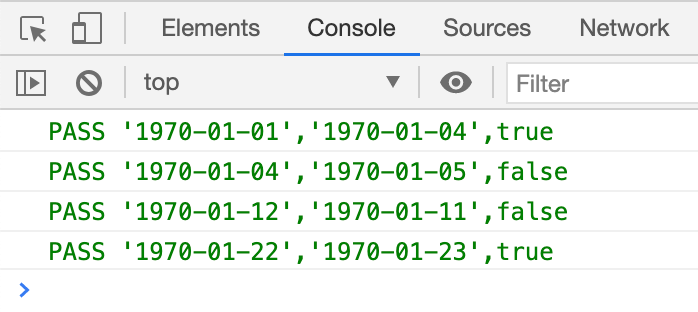

JS 判断两个日期是否是同一周，带单元测试
这篇文章发布于 2020/12/07，归类于 JavaScript
标签：
判断两个时间是否是同一周，判断两个日期是否是同一周
给定两个日期，怎么判断他们是同一周呢？核心是 所有时间都是从 1970年1月1日(周4) 开始，计算出当前时间距离该日期的天数，再用 (天数 + 4)/7 就是周数，如果相同则是同一周，这里会有一个特殊情况，就是周日的时候，需要特殊处理。判断时只需要日期，不要输入时间，默认都是以 '08:00:00' 为准。
/**
* @description 判断两个时间是否是同一周
* 所有时间都是从 1970年1月1日(周4) 开始，(天数 + 4)/7 就是周数，如果相同则是同一周
* 特殊情况：周日会是整数，如果直接取整，周日会和下周一是同一天
* (+new Date('1970-01-01') / oneDay) + 4 / 7 // 周四 = 0.57
* (+new Date('1970-01-04') / oneDay) + 4 / 7 // 周日 = 1
* (+new Date('1970-01-05') / oneDay) + 4 / 7 // 周一 = 1.14
* @params { Stirng } timeA '1970-01-03'
* @params { Stirng } timeB '1970-01-22'
*/
function isSameWeek(timeA, timeB) {
let weekIndexA = getWeekIndex(timeA)
let weekIndexB = getWeekIndex(timeB)
let tempArr = [weekIndexA, weekIndexB].sort((a, b) => a - b)
// 如果有周日，间隔 < 1，则是 [1.9, 2] 或 [1, 1.14]，
// 较大的数为整数则是同一周。间隔 >=1 则不是同一周
if (tempArr.some(item => Number.isInteger(item))) {
return tempArr[1] - tempArr[0] < 1 ? Number.isInteger(tempArr[1]) : false
} else {
return parseInt(weekIndexA) === parseInt(weekIndexB)
}
// 获取周数
function getWeekIndex(time) {
let oneDayTime = 24 * 3600 * 1000
let dayCount = time.getTime() / oneDayTime
let weekCount = (dayCount + 4) / 7
return weekCount
}
}单元测试
// isSameWeek 单元测试
function isSameWeekTest() {
let list = [
{ a: '1970-01-01', b: '1970-01-04', result: true },
{ a: '1970-01-04', b: '1970-01-05', result: false },
{ a: '1970-01-12', b: '1970-01-11', result: false },
{ a: '1970-01-22', b: '1970-01-23', result: true },
]
list.forEach(item => {
let res = isSameWeek(new Date(item.a), new Date(item.b)) === item.result
console.log(
`%c${res ? 'PASS' : 'FAIL'} '${item.a}','${item.b}',${item.result}`,
`color: ${res ? 'green' : 'red'}`
)
})
}
// Run
isSameWeekTest()运行效果:
